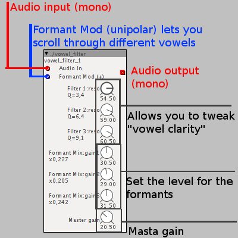

I patched this simple filter, it makes talk whatever you put in it:
Latest version: added a formant knob on the interface (it does manually the same thing formant mod does)
vowel_filter.axs (11.2 KB)
Older version:
vowel_filter.axs (10.6 KB)

Put vowel_filter.axs in your project's folder.
Type ./vowel_filter in the patch editor and you're done!